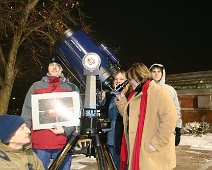
{kind=link}
Astro Club officers in 2007.
Astro Club officers in January 2007, standing at the Physics portico with the new skyAtlas and the 12-inch Meade LX200.
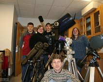
{kind=link}
2007 Astro club with equipment
2007 Astro club with equipment. The two small galileo refractors were purchased with club money. Before the observatory existed, we stored 'scopes in a room…
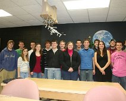
{kind=link}
2009 ONU Astro Club
2009 ONU Astro Club standing in what is now the physics colloquium room. Then it was used as a physics lab.
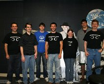
{kind=link}
2010 ONU Astro Club
2010 ONU Astro Club proudly wearing their new shirts.
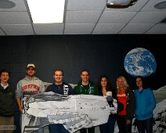
{kind=link}
2011 Astro Club
2011 Astro Club on Nov 16 posing with Einstein(s) to show their support of science.
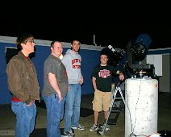
{kind=link}
2012 Astro Club outing.
March 2012 night at the observatory with some club members who also happened to be physics majors.
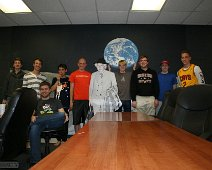
{kind=link}
2016 Astro Club
The ONU Astro Club in April 2016 standing in the physics colloquium room.
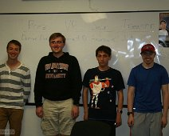
{kind=link}
2016 Astro Club officers
Officers for the ONU Astro Club. Taken 4/20/16. Not sure if these were the 2016-2017 officers (see next picture).
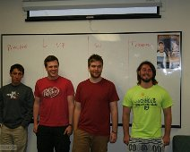
{kind=link}
2016 Astro Club officers
(Newly Elected?) Officers for the ONU Astro Club. Taken 4/27/16.
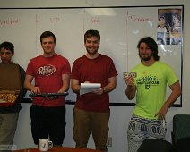
{kind=link}
2016 Astro Club officers
(New?) Officers for the ONU Astro Club, in funny poses. Taken 4/27/16.
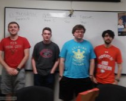
{kind=link}
ONU Astro Club officers 2017-2018.
ONU Astro Club officers 2017-2018. (Sorry this one was blurry.)
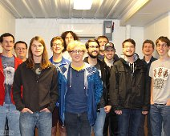
{kind=link}
ONU Astro Club 9/26/18.
The ONU Astro Club crammed into the observatory control room on 9/26/18. (This is not an exclusively male club - it just happened to be that night!)
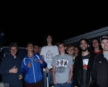
{kind=link}
Astro Club outing on 9/26/18.
Astro Club outing on 9/26/18. In the observing room of the observatory.
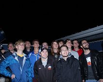
{kind=link}
Astro Club outing on 9/26/18.
Astro Club outing on 9/26/18. There must have been a really funny meteor up in the sky.
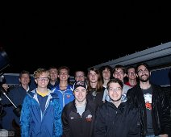
{kind=link}
Astro Club outing on 9/26/18.
Astro Club outing on 9/26/18. (All guys that night, but it is not a male-exclusive club.)
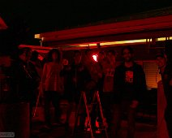
{kind=link}
Astro Club outing on 9/26/18.
Astro Club outing on 9/26/18. Taken with only the red lights on (for preserving dark adaption).
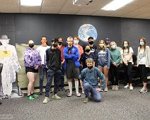
{kind=link}
Astro Club on 9/15/21
Astro Club on 9/15/21. Covid-era astronomy!
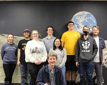
{kind=link}
Astro Club on 3/30/22
Astro Club on 3/30/22. Masks no longer required!
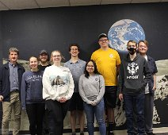
{kind=link}
Astro Club on 3/30/22
Astro Club on 3/30/22.
{kind=link}